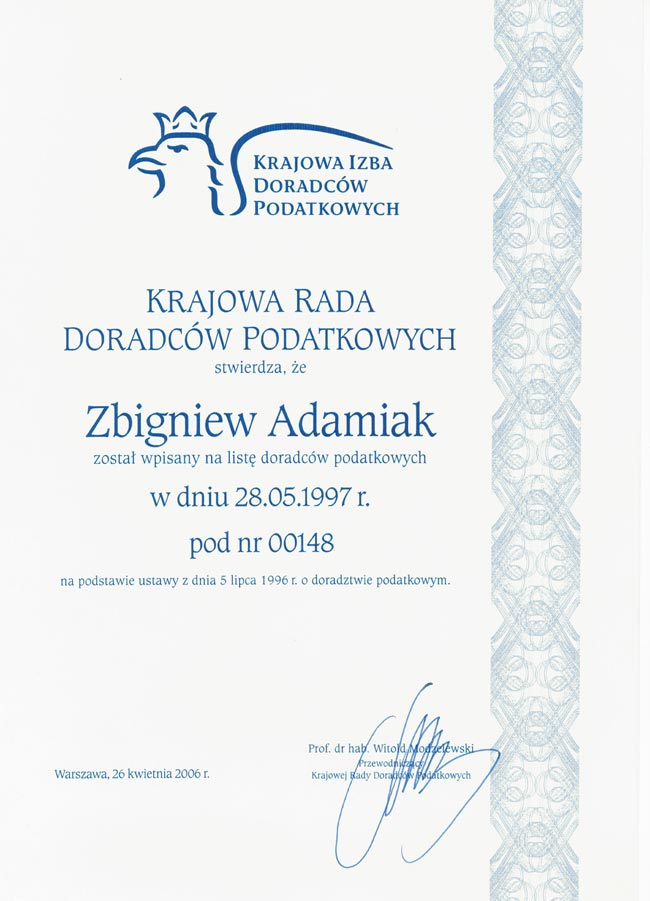

Witamy na stronie
Misja
Naszą misją jest cywilizowanie postępowania podatkowego, odstresowanie podatników i przekonanie organów procesu, iż art. 6 KC nie powinien mieć zastosowania w prawie podatkowym.
Realizowanie usług
Usługi realizowane są w ramach stałych umów lub w przypadku pojedynczych postępowań i kontroli podatkowych.
Prowadzenie księgowości
Kancelaria świadczy również stałe usługi w zakresie prowadzenia ksiąg rachunkowych i podatkowych.
O kancelarii
Kancelaria ma wieloletnie doświadczenie w pomaganiu Podatnikom podczas sporu z organami podatkowymi. Realizuje swoje usługi w ramach umów stałych lub dotyczących konkretnego postępowania. Obejmują one:
- porady, opinie i wyjaśnienia z zakresu obowiązków podatkowych;
- porady prawne z zakresu prawa pracy;
- audyt podatkowy;
- rejestrację działalności gospodarczej, w tym również spółek prawa handlowego;
- reprezentowanie Podatnika przez wszystkimi organami podatkowymi oraz zastępstwa procesowe;
- prowadzenie ksiąg rachunkowych i podatkowych;
- reprezentowanie Podatnika w postępowaniu egzekucyjnym, starając się by było ono jak najmniej dotkliwe;
- reprezentowanie Podatnika w postępowaniach dotyczących nieujawnionych źródeł dochodu lub nieujawnionych dochodów w ujawnionych źródłach.
Kancelaria może zająć się również inną, choćby najbardziej nietypową sprawą. Zachęcamy do kontaktu.
Potwierdzenie wpisu

Poznaj swoje prawa
Czy wiesz, że:
- Jeżeli w trakcie postępowania podatkowego (kontroli podatkowej) jesteś wzywany na przesłuchanie w charakterze strony, to możesz nie wyrazić zgody na to przesłuchanie, gdyby przykładowo miało ono pogorszyć Twoją sytuację podatkową?
- Nie musisz sporządzać jakichkolwiek dodatkowych zestawień w trakcie kontroli? Jeżeli są one potrzebne organowi, to jest on zobowiązany sporządzić je sam na podstawie przedłożonych przez Ciebie dokumentów i ewidencji. Nie daj się zastraszyć groźbą potencjalnej kary pieniężnej.
- Jeśli z jakichś powodów upłynął termin do złożenia przez Ciebie odwołania od niekorzystnej decyzji podatkowej, to są jeszcze inne instytucje procesowe aby ją uchylić? Przykładem może być stwierdzenie nieważności.
Kancelaria Doradcy Podatkowego
Zbigniew Adamiak
ul. Królewska 19
98-220 Zduńska Wola
telefon: 043 659 19 11
telefon: 502 647 868
telefon: 606 115 550
fax: 042 298 06 48
fax: 043 650 20 62
e-mail: adamiakz@si.onet.pl
e-mail: adamiak@adamiak.biz
Adres do doręczeń: skrytka pocztowa 78, 98-220 Zduńska Wola 1
Kancelaria jest czynna od poniedziałku do piątku w godzinach 8.00 – 16.00
Wskazówki dojazdu
Adres kancelarii
Doradca Podatkowy
Zbigniew Adamiak
Nr wpisu 00148
ul. Królewska 19
98-220 Zduńska Wola